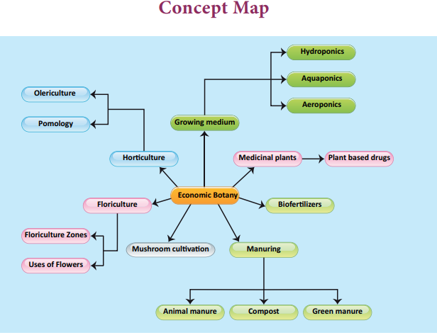
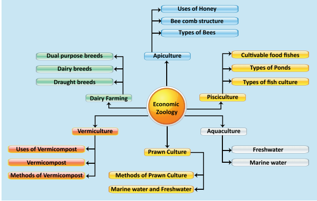

1. The production and management of fish is called
a. Pisciculture b. Sericulture c. Aquaculture d. Monoculture
2. Which one of the following is not an exotic breed of cow question mark
a. Jersey b. Holstein-Friesan c. Sahiwal d. Brown Swiss
3. Which one of the following is an Italian species of honey bee question mark
a. apis mellifera
b. Apis dorsata
c. Apis florae
d. Apis cerana
4. Which one of the following is not an Indian major carp question mark
a. Rohu b. Catla c. Mrigal d. Singhara
5. Drones in the honey bee colony are formed from
a. unfertilized egg b. fertilized egg c. parthenogenesis d. both b and c
6. Which of the following is an high milk yielding variety of cow question mark
a. Holstein- Friesan b. Dorset c. Sahiwal d. Red Sindhi
7. Which Indian variety of honey bee is commonly used for apiculture question mark
a. Apis dorsata b. Apis florea c. Apis mellifera d. Apis indica
8. dash is the method of growing plants without soil.
A bracket closed Horticulture b bracket closed Hydroponics c bracket closed Pomology d bracket closed None of these
9. The symbiotic association of fungi and vascular plants is
A bracket closed Lichen b bracket closed Rhizobium c bracket closed Mycorhizae d bracket closed Azotobacter
10. The plant body of mushroom is
A bracket closed Spawn b bracket closed Mycelium c bracket closed Leaf d bracket closed All of these
1. Quinine drug is obtained from dash
2. Carica papaya leaf can cure dash disease.
3. Vermicompost is a type of soil made by dash and microorganisms.
4. dash refers to the culture of prawns, pearl and edible oysters.
5. The largest member in a honey bee hive is the dash
6. dash is a preservative in honey.
7. dash is the method of culturing different variety of fish in a water body.
1. Mycorrhiza is an algayae.
2. Milch animals are used in agriculture and transport.
3. Apis florea is a rock bee.
4. Ongole is an exotic breed of cattle.
5. Sheep manure contains high nutrients than farm yard manure.
Column A |
Column B |
Lobsters |
Marine fish |
Catla |
Pearl |
Sea bass |
Shell fish |
Oysters |
Paddy |
Pokkali |
Fin fish |
Pleurotus sps |
Psoriosis |
Sarpagandha |
Oyster mushroom |
Olericulture |
Reserpine |
Wrighta tinctoria |
Vegetable farming |
a. Exotic breed and Indigenous breed
b. Pollen and Nectar
c. Shrimp and Prawn
d. Farmyard manure and Sheep manure
1. What are secondary metabolites question mark
2. What are the types of vegetable garden question mark
3. Mention any two mushroom preservation methods.
4. Enumerate the advantages of vermicompost over chemical fertiliser.
5. What are the species of earthworm used for vermiculture question mark
6. List the medicinal importance of honey
1. Enumerate the advantage of hydroponics.
2. Define Mushroom culture. Explain the mushroom cultivation methods
3. What are the sources of organic resources for vermicomposting question mark
4. Give an account of different types of fish ponds used for rearing fishes.
5. Classify the different breeds of the cattle with suitable examples.
1. Biomanuring plays an important role in agriculture. Justify
2. Each bee hive consists of hexagonal cells. Name the material in which the cell is formed and mention the significance of the hexagonal cells.
1. Jawaid Ahsan and Subhas Prasad Sinha A Hand Book on Economic Zoology, S.Chand and Company , New Delhi
2. Sharma O.P. Economic Botany Tata Mc Graw Publishing Co Limited
3. Ismail, S.A. The Earthworm Book, Other India Press, Goa
http:// www.biology.online.org
www.biology discussion.com
www.nios.ac.in.textbook.com

